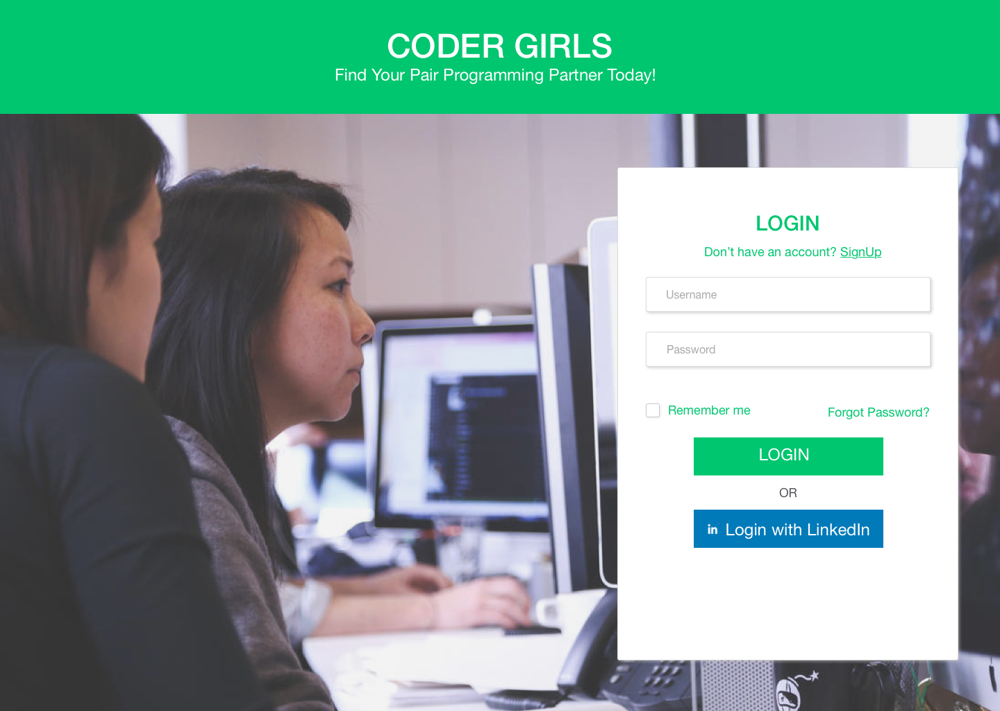
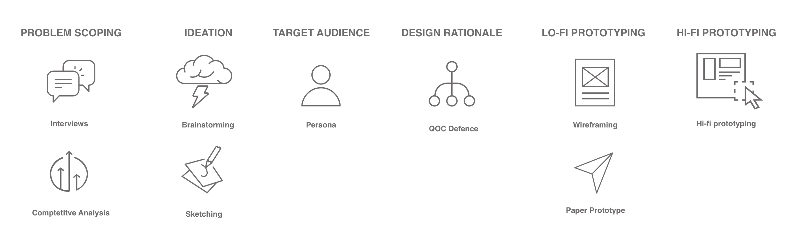
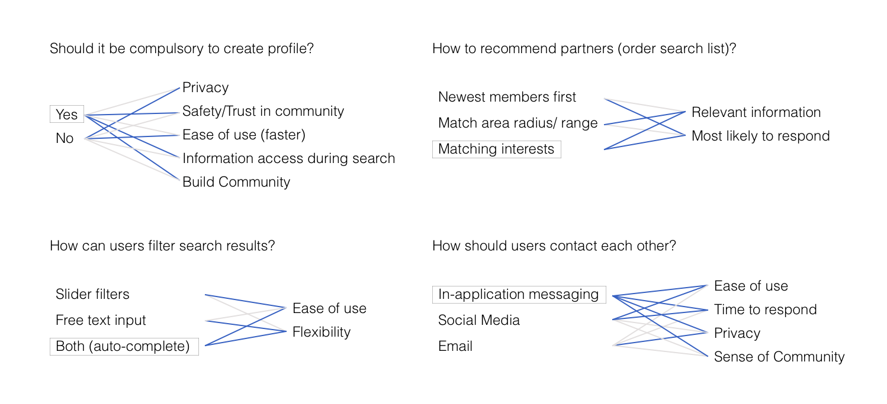

Hi, I'm Ruchi. Currently pursuing a master's degree at the University of Michigan in HCI, I am a UX Designer, Front End Developer, and a Data Visualization Enthusiast. I love everything to do with charts, graphs, and experiences that make me smile. I'm working on a research project about individual biases when reading charts and I will be working on a project about gestures in Augmented Reality next semester.
I’ve traveled to 15 countries so far and I love the multi-cultural experience that has offered. In my free time, you’ll find me reading / watching political dramas (current obsession is West Wing) or satisfying my sweet tooth. I love theater and story-telling (the image on the left is from when I played Victoria Ocampo). Hit me up if you want to talk about any of my projects or want to know the best chocolate fudge in Ann Arbor / Bangalore / Mumbai / Goa / Nagpur!
Seeking internship roles in User Experience Research, Design and Development for Summer, 2018.

Coder Girls: Pair Programming Partner Search
Problem: The number of women in technology is alarmingly low at 26% (NCWIT, 2017). While pair programming a possible solution for this, there are no platforms to enable the search for a partner.
Skills developed: Sketching, personas, design synthesis, brainstorming, paper prototyping, usability testing, high fidelity prototyping
The number of women technology is alarmingly low with only 26% of computing jobs being held by women (NCWIT, 2017). A lot of women leave the field due to lack of mentorship and network to tap into. The concept of pair-programming is the perfect solution for this problem as it not only helps improve skills and boost confidence, it also builds a network of women in technology. However, women often face difficulties in finding partners to pair program with. There is no dedicated platform to support this search and the existing platforms have mostly male users. To tackle this problem, I have created a Web Application called Coder Girls which allows users to search for pair programming partners.
Participatory and Social Interaction Design
I explored multiple design approaches, such as reflective, participatory and value sensitive design. For a topic that involved gender inclusion and coding, I thought it was best to go via the participatory design process. The target user has a lot of tacit knowledge and pain points that aid the design. Since the platform involved social interaction, I used concepts such as 'multiple selves' to enhance the experience of belonging to a community.
Process

User Research Interviews
I conducted 5 user interviews of graduate and undergraduate girl students in computer science who have pair-programmed in the past. While all of them enjoyed the process when done in class, most of them had never tried it outside of class because it was difficult to find someone to pair with, who had similar interests and proficiencies as them. These interviews gave me key insights about the need for a partner search platform. I also understood the motivation of my users through this process, with most users wanting this platform when they are preparing for interviews/exams or when they are just starting to learn a new coding language.
Competitive Analysis
I looked at the three most popular coding-partner search alternatives currently existing and compared their features, pros, and cons. The competitors included a Badge (pairprogramwith.me), a twitter hashtag (#pairwithme), and meetup.com.
Sketching
I started out by brainstorming a few possible solutions to the idea and expanded them to include workflows for each. This helped me explore a range of solutions, from physical to mixed reality:
Using a band that lights up when users cross paths, using a dedicated app, fast-switching hackathons, adding badges on LinkedIn profiles, using existing social media networks and posting on MOOCs discussion boards were some of them. (Each storyboard can be read top to bottom)
Persona
I created an empathy map for each persona involving their Needs, Goals and Motivations, Tasks, Feelings, Pain Points, and Influences. This helped me organize their information into Behaviour, Needs, Goals/ Motivation and Personality. Adding their demographics and a personal quote (from the interviews I had conducted earlier) helped bring them to life.
I identified one critical feature in the application and explored three solutions of this feature. The most critical feature for this project is search - how a user searches, what is returned in the search, how the search list is presented, what is the order of the list and other such questions. I came up with possible ways to achieve these tasks and analyses each approach against a set of criteria particular to that question. This helped me determine major design decisions such as forced login to allow customisation, profile creation to deliver rich results in searches by other users, ordering searches by matching interests to increase chances of a match and using in-app messaging for contact between two users for ease of use and quick response time. The detailed questions, options, and criteria used for each question are shown in the diagrams below.
Blue lines represent positive assessment and grey lines represent negative assessment. The choice I selected has a border around it.

Paper Prototyping
Paper prototyping was a quick, easy and inexpensive method to get feedback on my design. I tested the prototype with real users and discovered that I hadn't included the feature to edit profile. I also learned that adding LinkedIn login was much appreciated by most users as it reduced their onboarding time. Another hurdle I found in my design was that because of the position of filters, users tended to believe that all of them had to be selected to filter search results. I changed this to a universal search bar to avoid confusion. I gained a lot of constructive feedback in this process and re-iterated over my design to incorporate the insights gained from it.
High Fidelity Prototyping
I created each screen in Sketch and strung them together in a workflow in InVision. In the course of this, I did comparative feature analysis on the search bar and decided to change the universal search to include categories. I also added a 'suggested matches' area on the search page to increase user engagement. The high fidelity prototpye allowed users to provide specific feedback about areas of confusion. For example, some users were confused on how to save people for future reference, this resulted in the addition of a 'bookmark' feature on the user profile. I chose to use Material UI guidelines for this project as it gave a modern feel to the application and the user is comfortable with it (positive transfer from using other services on the internet). You can test the prototype here. I look forward to your suggestions!
Reflections
Over the course of the project I realized the importance of involving the user in the process. Often, what I as a designer assumed to be obvious, was not the case. I also learned to iterate over my designs. This process lead to small tiny steps towards improvement, and before I realised it, my product looked much neater and had a much smoother user experience than what I had set out to achieve. However, if I could change one thing, it would be my user research. I'm afraid I might have a slight sampling bias here since my dataset was very limited. In the future, I will definitely interview more users and perhaps also interview anti-users. I would also like to use a tool like Framer.js/ Proto.io to include microinteractions in my prototype since I believe they will deliver the exact feel of the product. Overall, this project taught me a lot about thinking from the users perspective and using my findings to create a better experience!
Flipkart: UI Designer and Developer
These projects were carried out as part of my employment at Flipkart. Details of the products are omitted due to a Non-Disclosure Agreement.
Project 1: Case Management Tool
Problem: The existing case management tool involved multiple screens with information scattered across them. The goal was to make a leaner tool with better information categorisation to reduce time spent in analyzing each blacklisting case.
Skills developed: Interviewing, Whiteboarding, Information Architecture, Wireframing, Usability Testing, Agile Development
Solution: Designed a new web application with cleaner information flow and migrated to a new tech stack (ReactJS) for better maintainability
Since the existing application had been in use for over a year, we decided to take up the Participatory Design approach as our users had tacit knowledge about the tool. User interviews were conducted to find the pain points in the existing system. This was followed by drawing an information diagram of the current system and reorganizing it using new categories to arrive at the new information diagram via the process of whiteboarding. Wireframes were created using the results of the earlier activity. A new look was decided for the web-app, keeping in mind the Flipkart brand’s new theme and adding material-UI. High Fidelity prototype was built in code (ReactJS). The new system was tested by users by conducting contextual inquiry style interviews, where users interacted with the system and provided first-usage feedback. After some tweaks, a sample set of users was onboarded for a week. The feedback received from this set was then incorporated into the system, resulting in the final development and deployment.
Project 2: Access Tool
Problem: Data across the team was available in all capacities to multiple users. This data needed to be guard-railed to ensure quality and security.
Data within the company has to be secured with respect to who is using it and for what purpose. The team brainstormed multiple solution to adding guardrails, keeping in mind the various types of data the company owned. Brainstorming resulted in creating a few key ideas that we thought were possible technically. These were presented to the stakeholders and after discussions guided by a SWOT analysis, the idea of creating ‘groups’ within the company with admins who could decide privileges for their users was selected. After several iterations of problem scoping and wireframing, a high fidelity prototype was built in ReactJS (HTML, CSS, JS). Usability testing was conducted on this tool with each user being given specific tasks and being observed. Finally, the finished product code was deployed.
Problem: Visualise a large dataset of education related fields in the state of Maharashtra
Tools used: D3.js, JS, HTML, CSS, Github
Solution: Zoomable TreeMap visualization to show hierarchical presence of infrastructural facilities
Role: Research Associate
Process
The Government of Maharashtra conducts surveys every year to record the presence of infrastructural facilities in schools all across the state. It also records values of gender ratio, student to teacher ratio and a separate examination to survey the learning levels at these schools. These surveys are extensive in terms of geography covered.
The state of Maharashtra can be divided into divisions -> districts -> clusters -> villages -> schools.
The project started out with exploring the data set and it was soon clear that this information can be overwhelming. So we decided to make it easier to extract sense-worthy information from this dataset. Various visualizations were tested and we zeroed in on a TreeMap as it was perfect for showing hierarchical data. The project was aimed at conveying the presence and magnitude of problem of areas at each level in the state.
Hierarchical data can be represented as a treemap. This visualization takes the treemap one step further, by adding a choropleth element to it. Not only are the rectangles’ areas proportional to the enrolment of that geographical area, their colors represent the percentage of schools that have a particular educational infrastructural facility such as playground/ electricity/ water/ ramps etc. This allows for identification and deeper analysis of problem areas by looking into sub-areas. It also allows comparison across geographical areas and across facilities. Smooth transitions upon zoom maintain visual continuity and display of specific data on hover allows context maintenance. The tool can be extended to include other facilities and states.
Problem: Use Papert’s idea of ‘objects to think with’ to make the students aware of the discrimination faced by the various genders ( known as GenderFuck in the New Liberal Arts 2.0)
Skills developed: Game design, User Testing for games, Sentiment Analysis
We began by exploring the concept of GenderFuck and what it meant in the society we were living in. This lead to a lot of research about gender discrimination in the modern context and also about gender fluidity. Using Papert’s ideas, we wanted to build an object which the user could think with. So we decided to build a board game which would allow the players to feel what real people feel when they are discriminated against.
The examples of gender discrimination were crowdsourced from our social media network. While it limited the society, we received a great variation within that spectrum.
These examples were then given ‘influence points’ based on how significantly they affected the person's life.
Using the influence points and examples, a twist on the traditional snakes and ladders was created. The game consisted of cards, which spelled out the player's gender and punishment for belonging to that gender. The punishment was determined by the points calculated earlier.
The game was tested with fellow graduate students to get a sense of what was going right and wrong. We observed that 4 players were the most optimum to enjoying this game. The final prototype was built and displayed in an exhibition where undergraduate students could play with it. The game invoked multiple reactions, often leading to heated arguments and discussions about the discriminations. It was particularly interesting to note the knowledge exchange happening during the gameplay between members, such as “My mom does this. Why is this wrong?”, followed by an explanation.
Problem: ICPSR recently underwent a reorganization from project-specific teams to process-oriented teams. Due to lack of standards, there is redundancy in work and work-turnaround is slow.
Solution: Recommended changes to the current standards and workflow processes to reduce redundancy in work
Team: Anant Mittal, Olivia, Ruchi Ookalkar, Ruth Wang
Problem Statement
ICPSCR (Inter-University Consortium for Political and Social Research) is the world leader in data curation of social data. The process within the organization varies from data acquisition, data cleaning, data massaging, generating metadata and creating codebooks to the final release of data for public use on their website. The organization went through a structural change in January 2018. Prior to January 2018, the organization was divided into topical archives, i.e teams with expertise in a particular archive. Each archive had its own manager who coordinated with funders (who set requirements for the curation). Post the reorganization, all the data curators were brought into one team, lead by curation supervisors. The supervisors communicated with the managers. This change from topical expertise to a general pool has led to a pushback in terms of accepting a uniform standard since they are dealing with historical ways of doing things.
Process
Interview Methodology
We conducted a total of 6 interviews from across the various level of the organizational hierarchy (project managers, data curators, curation supervisors and head of the organization). The interviews were conducted in the contextual style, where the interviewer asked questions at the place of work of the interviewee, often asking the interviewee to demonstrate tasks which came up during the interview. This process helped us discover problems and social issues within the organization. The interviews were conducted by two members - one acting as the interviewer and one as the note taker. We also collected audio recordings of the interview and images from the workplace to guide our analysis.
Interpretation
Each interview was followed by an interpretation session with 24 hours of the interview. During these sessions, we went over the interview notes, recordings and images and analyses these to generate affinity notes - one complete sentence that would describe what was happening at that point. We also noted down any questions we wanted to cover in future interviews and jotted down our analysis of the events.
Affinity Wall
After the 6 interviews, we had about 500 notes. We went ahead and categorized these into three levels. The white notes were grouped together by similarity of content or possible causal relationships to arrive at the blue notes. We then repeated the process two more times to arrive at green and pink notes. We ensured that none of the clusters had more than 7 ideas in each. This helped us in writing clear detailed sentences describing each cluster. The final pink notes gave us an idea of what exactly was happening in the organization and the key issues faced by the staff.
Recommendations
From the blue sticky notes arrived at in the affinity wall, we made a map of the Key Findings. These showcased the root cause of the problems our client was facing. We then brainstormed for solutions to each problem, by exploring existing solution in the market and devising our own solutions tailored for our client. The brainstorming exercise resulted in a lot of ideas which were then passed through a rubric of feasibility, cost of implementation, impact of the solution and political acceptance. Following this activity there emerged two winners for each problem area. We then went ahead and created a report of these solutions where we presented both long-term and short-term solutions to our client. (The report is available on request.)
We found that there was a lack of guideline about the work processes and the existing guidelines weren't being accepted due to improper implementation. We suggested that the voices of the entire team be heard when re-drafting the guidelines and including all variations of requirements in the guideline to reduce redundancy in doing the same work as per multiple guidelines.
The move from project-driven to process-driven teams has lead to lack of communication and loss of expertise. For this problem, we suggested holding regular 'KT (Knowledge Transfer) Sessions' to exchange information across the team.
Through our contextual interviews, we discovered that there was a lot of confusion about the new tool JIRA being adopted. While extra training about this tool is an obvious long-term solution, we also discovered that there existed 'in-house experts' - some team members knew how to make better use of the system. For the short term, we suggest installing a whiteboard where members can ask questions and answer them, also leading to more collaboration within the team.
Our analysis helped us realize that there existed some political friction within the organization. This was majorly caused by the lack of communication loops, in particular, feedback channels from lower management levels to higher management levels. We suggested holding regular 'Check-In Sessions', where an employee meets his/her direct manager once a month for a free-flowing conversation about the current work, the employee's future, company policies etc. This has been known to work in the technology industry.
Reflection
This project helped me grow as not only a user researcher, it also helped me grow as a team player. I learned to ask crisp, targeted questions in the contextual interviews and I also learned to take notes in the interviews. It was challenging at first to relate affinity notes to one another but with practice, I became better at it. I definitely learned a lot about presenting my ideas, both to my team members and to the client. I ended up improving my soft skills in this project in addition to becoming a better user researcher.